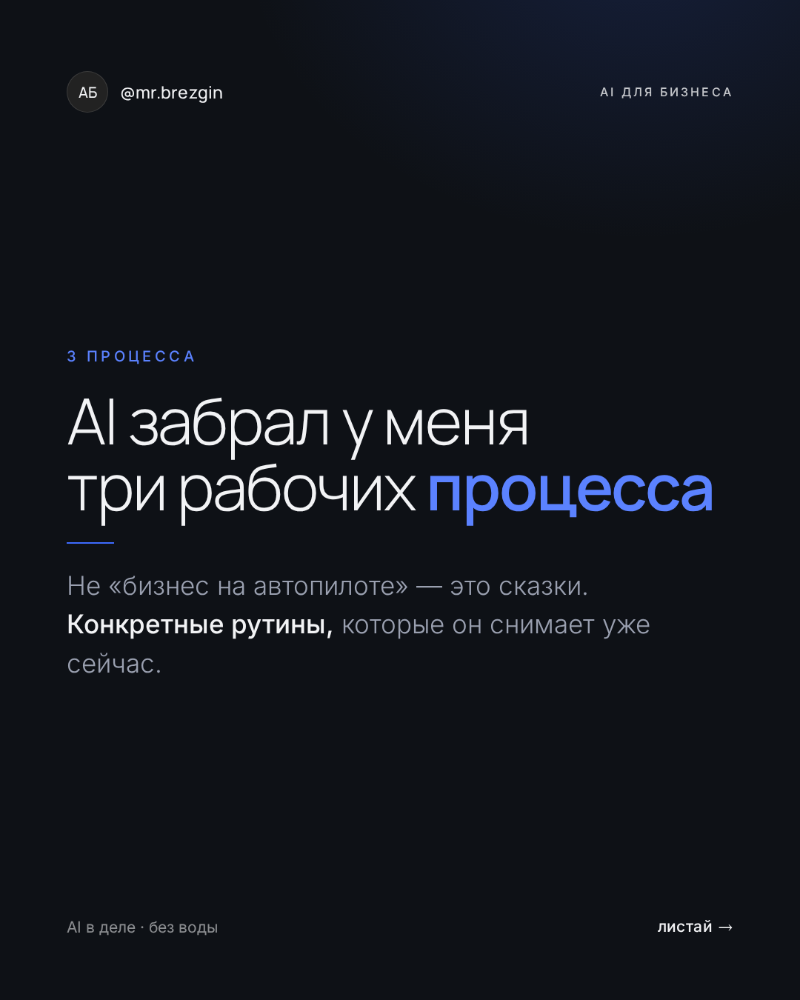
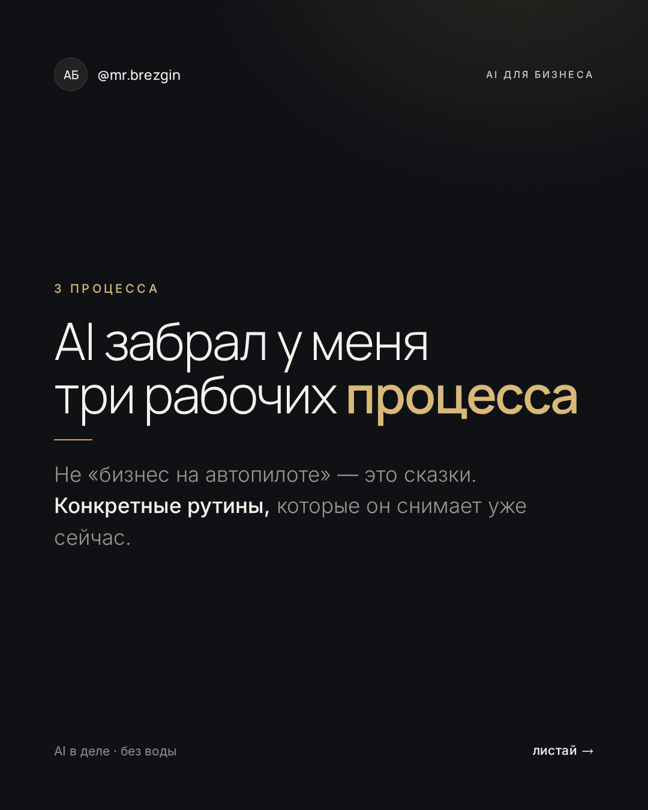

Новый стиль @mr.brezgin — тоньше + премиум
Один и тот же слайд в двух палитрах. Что заходит больше — синий (tech) или шампань (luxe)?
← к каруселям v1
Вариант 1 — графит + синий (tech-премиум)

Вариант 2 — графит + шампань (luxe-премиум)
